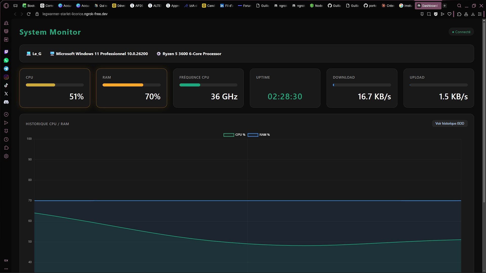
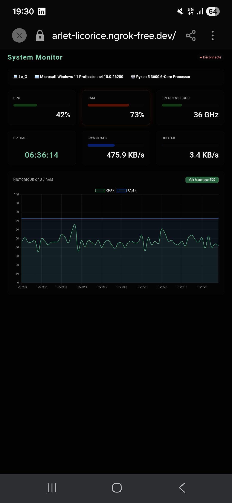

Dashboard web de monitoring système en temps réel — CPU, RAM, réseau, uptime — avec graphique historique, base de données SQLite et accès depuis n'importe quel appareil via WebSocket.
1 · Dashboard sur PC

2 · Accès depuis mobile (5G)

3 · Architecture
Le serveur Node.js lit les métriques système toutes les secondes via systeminformation, les stocke en SQLite, et les envoie en temps réel au navigateur via WebSocket. HTTP et WebSocket partagent le même port 3000 pour la compatibilité ngrok.
4 · Fonctionnalités
Données CPU, RAM, fréquence, réseau et uptime mis à jour chaque seconde via WebSocket
Courbe CPU/RAM des 60 dernières secondes avec Chart.js, axes dynamiques
Les cartes passent en orange puis rouge quand CPU ou RAM dépassent les seuils
Toutes les mesures sont sauvegardées en base — historique consultable à tout moment
Tunnel ngrok pour accéder au dashboard depuis n'importe quel appareil dans le monde
Nom du PC, OS et modèle CPU affichés automatiquement à la connexion
5 · Extrait de code — serveur WebSocket + SQLite
// Envoi des données toutes les secondes const interval = setInterval(async () => { const cpu = await si.currentLoad(); const ram = await si.mem(); const network = await si.networkStats('*'); const data = { cpu: Math.round(cpu.currentLoad), ram: Math.round((ram.used / ram.total) * 100), down: parseFloat((network[0].rx_sec / 1024).toFixed(1)) || 0, up: parseFloat((network[0].tx_sec / 1024).toFixed(1)) || 0, }; // Sauvegarde SQLite db.prepare('INSERT INTO mesures (date,cpu,ram,down,up) VALUES (?,?,?,?,?)') .run(new Date().toISOString(), data.cpu, data.ram, data.down, data.up); // Envoi WebSocket if (ws.readyState === WebSocket.OPEN) ws.send(JSON.stringify(data)); }, 1000);